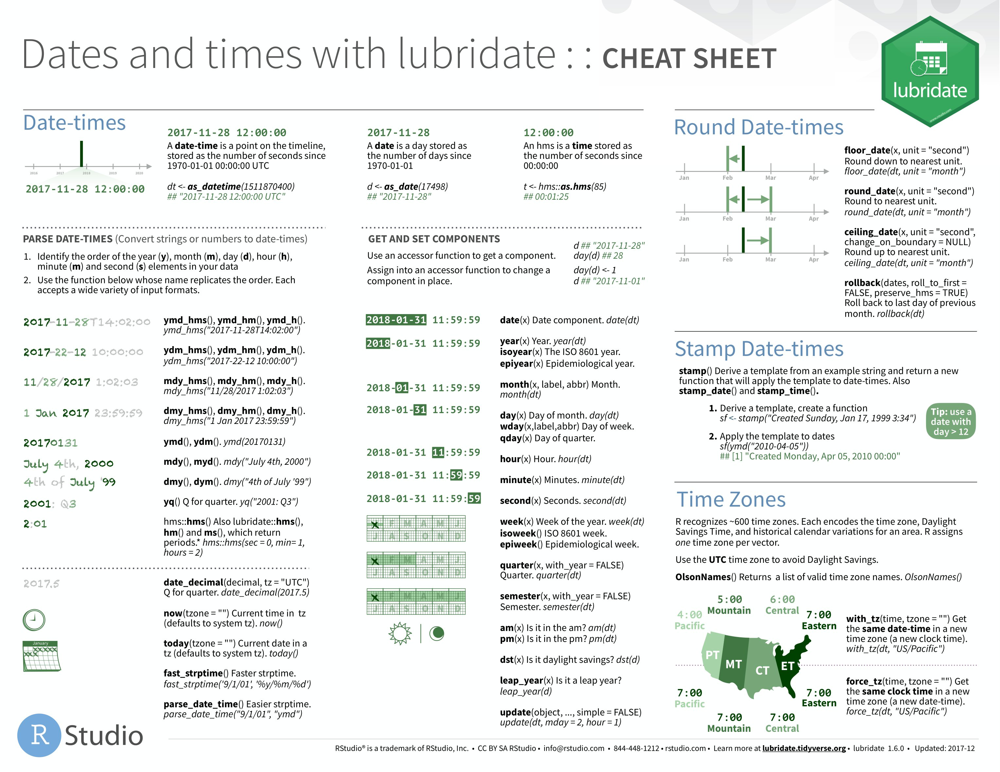
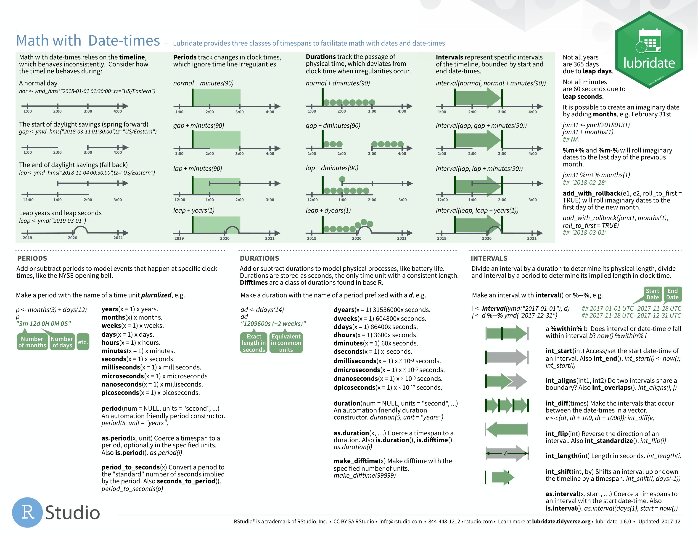

Dates can be annoying to work with because they come in many formats…
08/31/2023
08-31-2023
08/31/23 01:30:36
08-31-2023 12:36 PM
But R has some helpful tools that standardize dates and allow us to use them in calculations
To begin, we’re going to grab a new dataset from the NYC Open Data Portal, download it as a .csv, and save it to our project.
library(tidyverse)
Warning: package 'tidyverse' was built under R version 4.1.3
Warning: package 'ggplot2' was built under R version 4.1.3
Warning: package 'tibble' was built under R version 4.1.3
Warning: package 'tidyr' was built under R version 4.1.3
Warning: package 'readr' was built under R version 4.1.3
Warning: package 'purrr' was built under R version 4.1.3
Warning: package 'dplyr' was built under R version 4.1.3
Warning: package 'stringr' was built under R version 4.1.3
Warning: package 'forcats' was built under R version 4.1.3
Warning: package 'lubridate' was built under R version 4.1.3
-- Attaching core tidyverse packages ------------------------ tidyverse 2.0.0 --
v dplyr 1.1.2 v readr 2.1.4
v forcats 1.0.0 v stringr 1.5.0
v ggplot2 3.4.2 v tibble 3.2.1
v lubridate 1.9.2 v tidyr 1.3.0
v purrr 1.0.1
-- Conflicts ------------------------------------------ tidyverse_conflicts() --
x dplyr::filter() masks stats::filter()
x dplyr::lag() masks stats::lag()
i Use the conflicted package (<http://conflicted.r-lib.org/>) to force all conflicts to become errors
library(janitor)
Warning: package 'janitor' was built under R version 4.1.3
Attaching package: 'janitor'
The following objects are masked from 'package:stats':
chisq.test, fisher.test
filmpermits_clean <- filmpermits %>%select(event_type, borough, category, sub_category_name, start_date_time, end_date_time) %>%filter(category !="WEB") %>%mutate(type =case_when(category =='Documentary'~'Film', category =='Film'~'Film', category =='Television'~'Television', category =='Commerical'~'Commercial',TRUE~'Other')) filmpermits_grouped <- filmpermits_clean %>%group_by(type) %>%summarize(num_permits =n()) %>%# n() is a count of the recordsarrange(desc(num_permits)) %>%mutate(share = num_permits /sum(num_permits))
Working with dates
We’re going to install the lubridate package and load it. Some core R packages have helpful cheatsheets like this one. With our core knowledge of how functions work we should be able to apply these to our work!.
We can use lubridate to work with dates that come in various formats. With the film permits dataset we can run the below to make R recognize these fields as dates. Here’s a lubridate cheat sheet: https://evoldyn.gitlab.io/evomics-2018/ref-sheets/R_lubridate.pdf


library(lubridate)filmpermits_clean_dates <- filmpermits_clean %>%mutate(start_date_time =mdy_hms(start_date_time),end_date_time =mdy_hms(end_date_time))# Let's see what the earliest start date in the dataset is. This will run in the console. filmpermits_clean_dates %>%arrange(start_date_time)
# A tibble: 2,597 x 7
event_type borough category sub_category_name start_date_time
<chr> <chr> <chr> <chr> <dttm>
1 Theater Load in and L~ Manhat~ Theater Theater 2023-01-01 00:01:00
2 Theater Load in and L~ Manhat~ Theater Theater 2023-01-01 00:01:00
3 Shooting Permit Manhat~ Televis~ News 2023-01-01 04:00:00
4 Shooting Permit Manhat~ Televis~ News 2023-01-02 04:00:00
5 Theater Load in and L~ Brookl~ Theater Theater 2023-01-03 07:00:00
6 Shooting Permit Queens Televis~ Episodic series 2023-01-03 07:00:00
7 Shooting Permit Brookl~ Televis~ Episodic series 2023-01-03 10:00:00
8 Rigging Permit Manhat~ Documen~ Not Applicable 2023-01-03 17:00:00
9 Shooting Permit Manhat~ Televis~ Morning Show 2023-01-04 05:00:00
10 Shooting Permit Manhat~ Documen~ Not Applicable 2023-01-04 06:00:00
# i 2,587 more rows
# i 2 more variables: end_date_time <dttm>, type <chr>
# Let's see what the latest start date in the dataset is. filmpermits_clean_dates %>%arrange(desc(start_date_time))
# A tibble: 2,597 x 7
event_type borough category sub_category_name start_date_time
<chr> <chr> <chr> <chr> <dttm>
1 Shooting Permit Manhat~ Film Feature 2023-06-01 09:00:00
2 Shooting Permit Manhat~ Televis~ News 2023-06-01 09:00:00
3 Shooting Permit Queens Film Feature 2023-06-01 08:00:00
4 Shooting Permit Bronx Televis~ Episodic series 2023-06-01 07:00:00
5 Shooting Permit Manhat~ Televis~ Episodic series 2023-06-01 07:00:00
6 Shooting Permit Queens Televis~ Episodic series 2023-06-01 07:00:00
7 Shooting Permit Manhat~ Commerc~ Commercial 2023-06-01 06:00:00
8 Shooting Permit Manhat~ Still P~ Not Applicable 2023-06-01 06:00:00
9 Shooting Permit Brookl~ Televis~ Episodic series 2023-06-01 05:00:00
10 Theater Load in and L~ Manhat~ Theater Theater 2023-06-01 01:00:00
# i 2,587 more rows
# i 2 more variables: end_date_time <dttm>, type <chr>
Let’s use lubridate to make a list of all the film permits active just this summer. When sending R a date in a logical condition, wrap it in as.Date() so R knows its a date not a string. R & Lubridate defaults to the 'YYYY-MM-DD' format.
filmpermits_summer23 <- filmpermits_clean_dates %>%filter(end_date_time >=as.Date('2023-06-01') & start_date_time <=as.Date('2023-08-31'))# Now I can run the same analysis as above and see if the % breakdowns are any different. filmpermits_summer23_grouped <- filmpermits_summer23 %>%group_by(type) %>%summarize(num_permits =n()) %>%mutate(share = num_permits /sum(num_permits)) %>%arrange(desc(share))filmpermits_summer23_grouped
# A tibble: 3 x 3
type num_permits share
<chr> <int> <dbl>
1 Other 16 0.667
2 Television 6 0.25
3 Film 2 0.0833